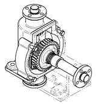
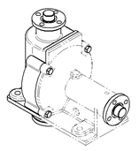

Model Options tab (Drawing View Properties dialog box)
Defines the drawing view options for simplified parts and assembly features.
- Simplify
-
- Use simplified parts
-
Specifies whether simplified parts are shown in a drawing view. You can use this option for drawing views created using a display configuration or a zone.
When the Show all assembly features option also is selected, both simplified parts and assembly features are displayed in the drawing view.
- For all parts
-
Specifies that simplified parts are used in the drawing view for all parts for which a simplified representation is available.
Note:Only this option is valid for placement of a drawing view with an assembly zone.
- Based on configuration
-
Specifies that simplified parts are used in the drawing view based on model configuration.
- Use simplified assemblies
-
Specifies whether the simplified assembly representation is used in the drawing view. You can use this option for drawing views created using a display configuration.
- For all subassemblies
-
Where a simplified representation exists, display it. Do this for all subassemblies in the drawing view.
- Based on configuration
-
Specifies that you want the selected configuration to dermine whether subassemblies are displayed as simplified or as designed.
- For top assembly
-
Specifies that you want the drawing view to display only the top-level assembly as simplified.
- Assembly
-
- Show all assembly features
-
Specifies that assembly features created in the Assembly environment are shown in the drawing view.
You can use this option to show material removal features such as holes, chamfers, and cutouts, as well as material addition features. When this box is checked, these types of assembly features are displayed in the drawing view even if the Use simplified parts box is also checked.
- Suppress material removing features (does not apply to pipes, frames, and adjustable parts)
-
Specifies that material removal features are not shown in the drawing view, leaving only the material addition features. This results in parts being shown in their pre-cut state. Pipes, frames, and adjustable parts in the assembly are not affected by this option.
- Hide all assembly features
-
Specifies that assembly features created in the Assembly environment are not shown in the drawing view.
- Show new components added to assemblies in drawing views
-
If new components are added to the assembly model, specifies that they are shown in assembly part views on the drawing.
For example, you can use this option to show holes that were added to a part, or end treatments that were applied to structural frame members, when an assembly model was edited.
- Reference Parts
-
- Show reference parts as transparent
-
Displays reference parts in an assembly drawing view as transparent parts. When cleared, reference parts are displayed as opaque parts.
Example:Transparent reference part
Opaque reference part


Note:This option applies to parts that are designated as reference parts. You can designate a reference part by selecting it from the Parts List on the Display tab, and then showing it using the Display as Reference check box.
For more information, see Reference parts.